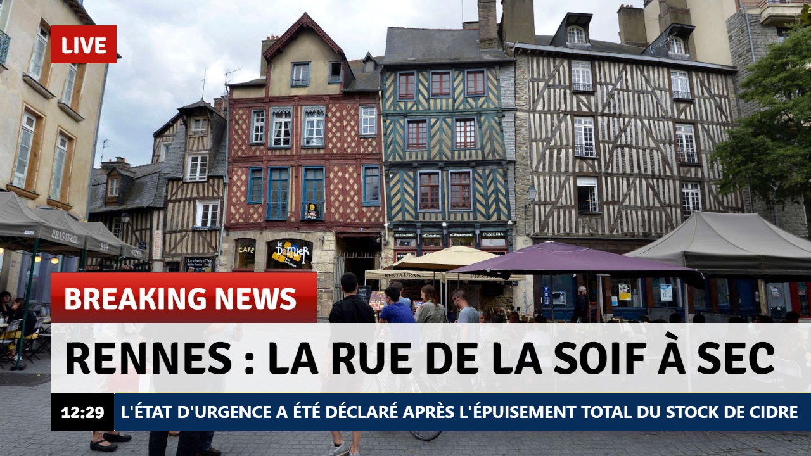

Interbreizh
Interbreizh
Replay disponible sur interbreizh.tv

◼La Région Normandie demande pour la 1532ème fois à la Bretagne de leur rendre le Mont-Saint-Michel
◼Brest : Controlé à 4.23g, un homme d'une cinquantaine d'années en garde à vue pour ivresse sur la voie publique.
◼Pays Nantais : Le maire de Nantes démisionne après qu'on ait découvert que c'était lui, l'homme ivre de Brest.
◼Brest : Controlé à 4.23g, un homme d'une cinquantaine d'années en garde à vue pour ivresse sur la voie publique.
◼Pays Nantais : Le maire de Nantes démisionne après qu'on ait découvert que c'était lui, l'homme ivre de Brest.


/cloudfront-eu-central-1.images.arcpublishing.com/ipmgroup/RPOWQP3Q5RGWVCWIYNX6FOVG5Y.jpg)


:quality(70)/cloudfront-eu-central-1.images.arcpublishing.com/liberation/YUZ3C4LTPZHR4FCBFFUXQ56KTU.jpg)


| 1 | 2 | 3 | » |